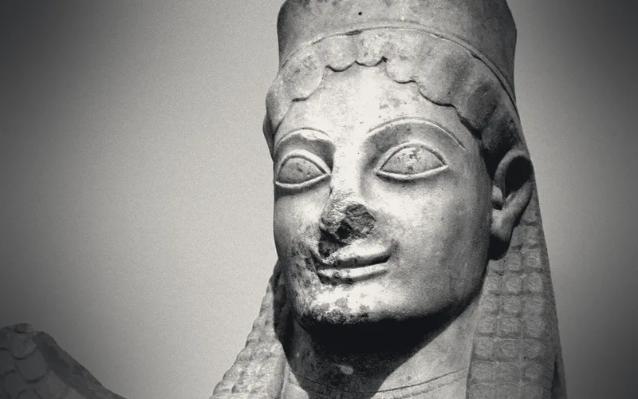

O enigma
A Esfinge perguntava: qual ser tem uma só voz e anda com quatro pés, depois com dois e depois com três? Quem errava era devorado.
Apolodoro, Biblioteca III
CRIATURAΣφίγξ
Tinha corpo de leão, asas de pássaro e rosto de mulher. Ficava num monte perto de Tebas e devorava quem não resolvesse o seu enigma, até Édipo dar a resposta certa.
Que nota você dá? Clique nos cerberinhos:
 1 ★
2 ★
3 ★
4 ★
5 ★
1 ★
2 ★
3 ★
4 ★
5 ★
Ela também fazia perguntas na porta de uma cidade. Eu sou mais simples: não pergunto nada, só não deixo ninguém sair.
A Esfinge perguntava: qual ser tem uma só voz e anda com quatro pés, depois com dois e depois com três? Quem errava era devorado.
Apolodoro, Biblioteca IIIÉdipo respondeu: o ser humano. Engatinha quando é bebê, anda em dois pés quando adulto e usa bengala na velhice. Derrotada, a Esfinge se jogou do alto do monte.
Apolodoro, Biblioteca IIIA esfinge do Egito é um leão com cabeça de homem que guarda templos. A grega é feminina, tem asas e é perigosa. As duas têm o mesmo nome, mas não são o mesmo ser.
Arte grega e egípcia“E ela gerou a funesta Esfinge, a ruína dos cadmeus.”
Hesíodo, Teogonia (tradução livre)